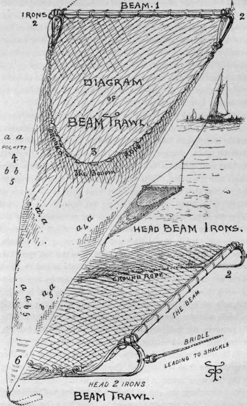

Sea Fishing From Yachts And Large Fishing Boats. Part 8
Description
This section is from the book "Sea Fishing", by John Bickerdyke. Also available from Amazon: Sea Fishing.
Sea Fishing From Yachts And Large Fishing Boats. Part 8
The largest number of small flat fish is probably caught in the very small meshed shrimp trawls which are worked in most of our larger estuaries. A report was made on this subject some time ago by the Marine Biological Association. It appears that the number of small flat fish taken in the course of a day by the shrimp trawlers is enormous. Of these, without much doubt, a large number are injured, and die after having been returned to the sea.
I have not the slightest wish to write anything which would injure a very important branch of the fishing trade, and it may be said, of course, that I am chiefly interested in preserving sea fish for the use of sportsmen. If, however, it is shown that overtrawling is being carried on, and that certain fisheries are being seriously injured, it should be obvious that any reasonable restrictions on trawling, which tend to promote the welfare of the fisheries, are really most of all in the interests of the trawlers.
Many people are blinded by statistics and remain quite ignorant of the fact that it is the vast quantities of fish brought from the more distant fisheries of Faroe and Iceland, which swell the takes and promote the illusion that our own fisheries are as fruitful as ever. The history of many a fishing ground reads somewhat as follows : a little trawling and a good deal of line fishing and average quantities of fish caught year by year. Then come more trawlers, and for several years more fish are caught than previously, owing, of course, to increased and improved methods of capture. But soon fellows the inevitable falling-off in the productiveness of the fisheries, the men cry out, and there is a royal commission or a special committee. In due course a blue book is published, sooner or later a general election occurs, new fishing grounds are discovered, and the matter is forgotten.
They seem to manage these things better in Denmark. The Government of that country, finding that the English and other foreign trawlers were beginning to injure the Faroe and Icelandic fisheries, have recently prohibited trawling in those waters. The mere possession of a trawl on those fishing grounds entails a heavy penalty.
What could be more forcible than the statement of the Select Committee of 1893 ? That committee reported, as regards the great fishing grounds in the North Sea, that the consensus of evidence of a number of persons interested in the fisheries, whether professionals or landsmen, whether smack-owners or fishermen, whether scientific experts or statisticians, 'showed that a serious diminution had occurred among the more valuable classes of flat fish, particularly soles and plaice— a diminution which was to be attributed to overfishing by trawlers in certain localities'.
Perhaps some people who read these remarks have never seen a beam trawl. The origin of this peculiar net is unknown ; but for many years something of the kind has been used in the Mediterranean, dragged between two vessels. In England, Barking and Brixham both claim to be the first ports from which trawlers sailed. The trawl generally used is a triangular-shaped bag, the mouth of which is kept open by a beam of wood. The beam does not rest on the bottom, but is fixed along the upper edge of the mouth of the net and kept off the bottom by two irons. The ground rope to which the rest of the mouth of the net is fastened scrapes along the bottom, forming a big curve behind the beam. As the fish meet this ground rope many of them swim upwards, only to find the back of the net above them, and a certain number, not by any means all, work down to the narrow end of the net, which is called variously the cod, purse, or bunt. The top of the net is called its back, and the portion which scrapes the ground its belly. To preserve the belly from being worn away on the bottom, several layers of old netting are often placed under it.
The trawl travels very slowly, and doubtless many fish after entering turn their tail towards the purse and depart hastily. If the net were simply a bag most fish would have little difficulty on reaching the end of the net in turning and swimming out again if they were so disposed. To prevent this, what are called pockets are made in the net. This will be understood very clearly from the illustration.
THE BEAM TRAWL.
The belly and back of the net are laced together along the lines a a, b b ; and these parts with the back form an arrangement which carries out exactly the same principle as that on which the crab pot or lobster pot, and many kinds of fish-traps, are made. The cod, or extreme end of the bag, into which most of the fish find their way, is about one-seventh of the whole length of the apparatus. The end of the cod can be opened by undoing the cod line, and its contents, together with the fish in the pockets, emptied out. It is a curious fact that soles are more often found in the pockets than at the end of the cod.
The following are the names of the different parts of the trawl : 1, the beam ; 2, the head irons; 3, the ground rope ; 4 and 5, the pockets ; 6, the cod, purse, or bunt. Sailors often prefer an old rope for use as ground rope, so that if it catches in any rock, old anchor, or wreckage, it breaks ; though the net may be torn, the whole apparatus, which is very costly, is not lost.
The edge of the back which is fastened to the beam is called the square of the net ; while the portion attached to the ground rope is cut away to form a deep curve, and the centre of this curve is called the bosom. The centre of the beam is distant from the centre of the bosom about as many feet as the beam is long. It is obviously desirable that the beam and back of the net should overhang for some distance before the fish are disturbed by the ground rope. The two ropes which lead from the eyes on the irons to the big towing rope are the bridle of the trawl; while the big rope itself is called the trawl warp.
Continue to:
- prev: Sea Fishing From Yachts And Large Fishing Boats. Part 7
- Table of Contents
- next: Sea Fishing From Yachts And Large Fishing Boats. Part 9
Tags
fishing, hooks, bait, fishermen, spanish mackerel, mackerel fishing